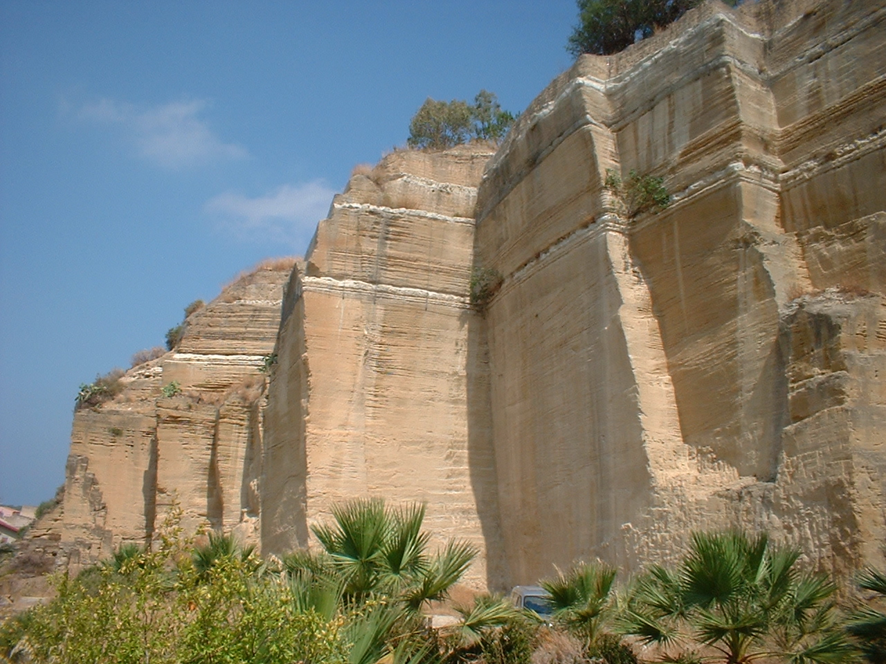

Cava di Lascari

ITALIANO - Antica cava di “Tufo” a spese delle giallastre calcareniti plioceniche affioranti nell’areale, a tratti fossilifere. Bellissimo il riscontro paesaggistico, laddove nelle pareti verticali della cava si riscontrano, oltre ai livelli di argille marnose bianche a foraminiferi planctonici “Trubi”, delle tipiche strutture sedimentarie a festone nelle rocce calcarenitiche. (Pliocene inf. – medio)
ENGLISH - Ancient quarry of “Tufo” at the expense of the yellowish Poliocene limestone surfacing in the area, sometimes fossiliferous. The landscape is beautiful, where in the vertical walls of the quarry, in addition to the levels of white marly clay foraminifers planktonic “Trubi”, typical festoon sedimentary structures in calcareous rocks are found. (Pliocene inf. – medio)